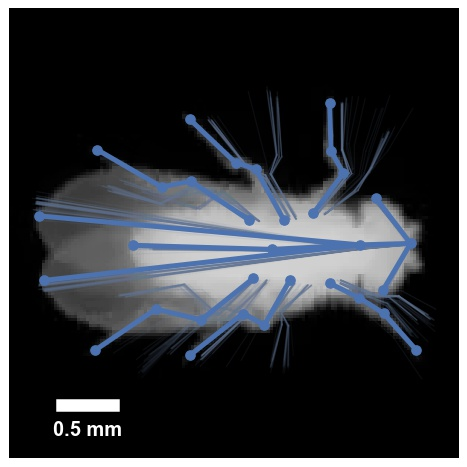
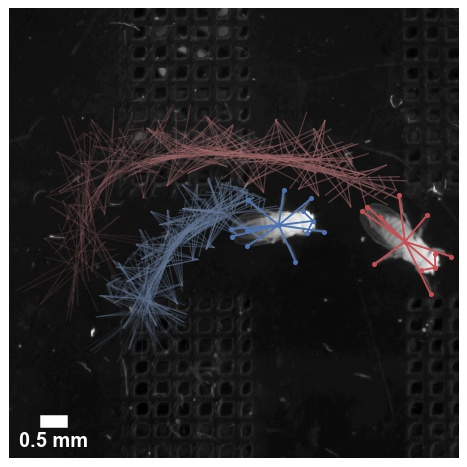
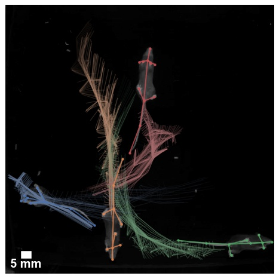
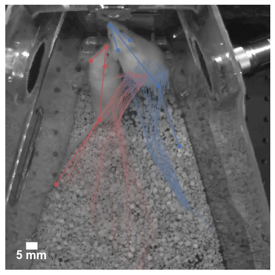
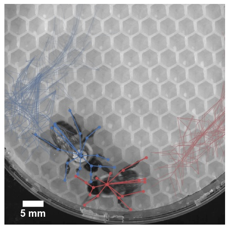
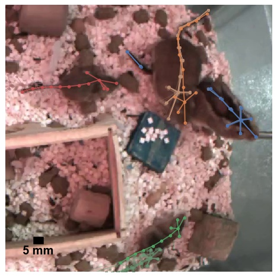

Datasets¶
Here we provide a number of sample and benchmark datasets that can be used for experimenting with or extending SLEAP.
These datasets are all saved as .pkg.slp files, which are self-contained SLEAP labels together with embedded image data. See Data structures for examples on how to work with SLEAP files.
For the full set of labeled datasets and trained models reported in the SLEAP paper (Pereira et al., Nature Methods, 2022), please see the OSF repository.
Hint
Need a quick testing clip? Here's a video of a pair of mice in a standard home cage setting.
fly32¶

| Name | fly32 |
|---|---|
| Description | Animal-centered movies of single fruit fly (Drosophila melanogaster) freely moving in an enclosed circular arena with backlight. Videos were recorded with a camera that followed animal, so all images are roughly centered. |
| Videos | 59 |
| Image size | 192 x 192 x 1 |
| FPS | 100 |
| Resolution | 35 px / mm |
| Skeleton | 32 nodes |
| Num Animals | 1 |
| Identity | ✘ |
| Labels | 1500 |
| Download | Train (.pkg.slp) / Validation (.pkg.slp) / Test (.pkg.slp) |
| Example | Clip (.mp4) / Tracking (.slp) |
| Credit | Berman et al. (2014), Pereira et al. (2019), Pereira et al. (2022), Talmo Pereira, Gordon Berman, Joshua Shaevitz |
flies13¶

| Name | flies13 |
|---|---|
| Description | Freely interacting pairs of virgin male and female fruit flies (Drosophila melanogaster, NM91 strain) 3 to 5 days post-eclosion. Animals frequently engage in courtship behavior. |
| Videos | 30 |
| Image size | 1024 x 1024 x 1 |
| FPS | 150 |
| Resolution | 30.3 px / mm |
| Skeleton | 13 nodes |
| Num Animals | 2 |
| Identity | ✔ |
| Labels | 2000 frames, 4000 instances |
| Download | Train (.pkg.slp) / Validation (.pkg.slp) / Test (.pkg.slp) |
| Example | Clip (.mp4) / Tracking (.slp) |
| Credit | Pereira et al. (2022), Junyu Li, Shruthi Ravindranath, Talmo Pereira, Mala Murthy |
mice_of¶

| Name | mice_of |
|---|---|
| Description | Freely moving C57BL/6J mice (Mus musculus) in 45.7 x 45.7 cm open field arena with a clear acrylic floor, imaged from below to ensure paw visibility. |
| Videos | 20 |
| Image size | 1280 x 1024 x 1 |
| FPS | 80 |
| Resolution | 1.97 px / mm |
| Skeleton | 11 nodes |
| Num Animals | 1-5 |
| Identity | ✘ |
| Labels | 1000 frames, 2950 instances |
| Download | Train (.pkg.slp) / Validation (.pkg.slp) / Test (.pkg.slp) |
| Example | Clip (.mp4) / Tracking (.slp) |
| Credit | Pereira et al. (2022), John D'Uva, Mikhail Kislin, Samuel S.-H. Wang |
mice_hc¶

| Name | mice_hc |
|---|---|
| Description | Pairs of male and female white Swiss Webster mice (Mus musuculus) imaged in a home cage environment with lightly-colored bedding, imaged from above. Animals are fairly low contrast with respect to the background. |
| Videos | 40 |
| Image size | 1280 x 1024 x 1 |
| FPS | 40 |
| Resolution | 1.9 px / mm |
| Skeleton | 5 nodes |
| Num Animals | 2 |
| Identity | ✘ |
| Labels | 1474 frames, 2948 instances |
| Download | Train (.pkg.slp) / Validation (.pkg.slp) / Test (.pkg.slp) |
| Example | Clip (.mp4) / Tracking (.slp) |
| Credit | Pereira et al. (2022), Eleni Papadoyannis, Mala Murthy, Annegret Falkner |
bees¶

| Name | bees |
|---|---|
| Description | Pairs of female worker bumblebees (Bombus impatiens) freely interacting in a petri dish with hexagonal beeswax flooring for up to 30 minutes |
| Videos | 18 |
| Image size | 1536 x 2048 x 1 |
| FPS | 100 |
| Resolution | 14 px / mm |
| Skeleton | 21 nodes |
| Num Animals | 2 |
| Identity | ✘ |
| Labels | 804 frames, 1604 instances |
| Download | Train (.pkg.slp) / Validation (.pkg.slp) / Test (.pkg.slp) |
| Example | Clip (.mp4) / Tracking (.slp) |
| Credit | Pereira et al. (2022), Grace McKenzie-Smith, Z. Yan Wang, Joshua Shaevitz, Sarah Kocher |
gerbils¶

| Name | gerbils |
|---|---|
| Description | Selected videos from a continuous monitoring setup of a home cage with 2 pup and 2 adult gerbils (Meriones unguiculatus), from P15 to 8 months old. Some animals are partially shaved to distinguish their appearance. |
| Videos | 23 |
| Image size | 1024 x 1280 x 3 |
| FPS | 25 |
| Resolution | 2 px / mm |
| Skeleton | 14 nodes |
| Num Animals | 4 |
| Identity | ✔ |
| Labels | 425 frames, 1588 instances |
| Download | Train (.pkg.slp) / Validation (.pkg.slp) / Test (.pkg.slp) |
| Example | Clip (.mp4) / Tracking (.slp) |
| Credit | Pereira et al. (2022), Catalin Mitelut, Marielisa Diez Castro, Dan H. Sanes |